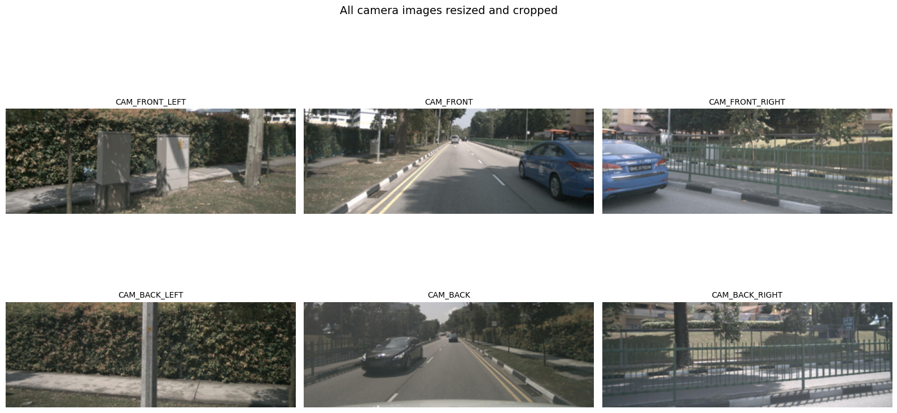
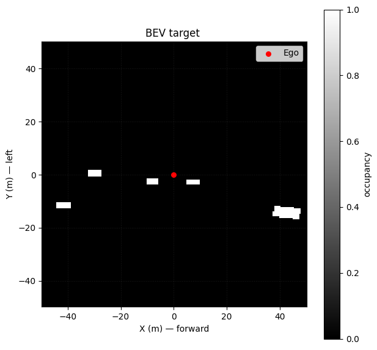
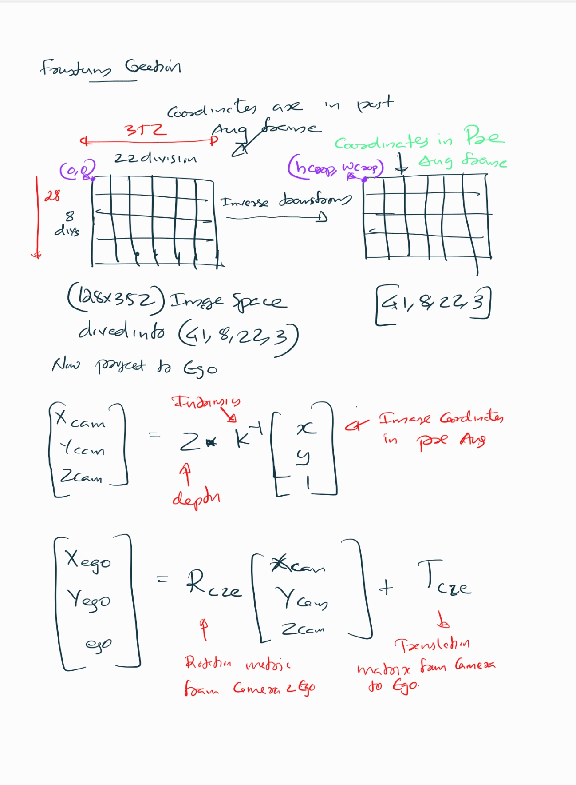
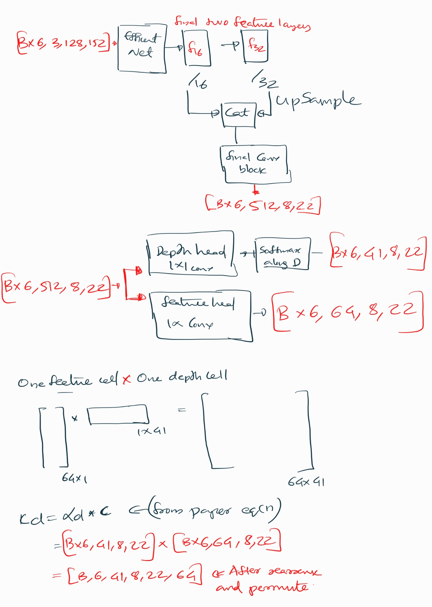
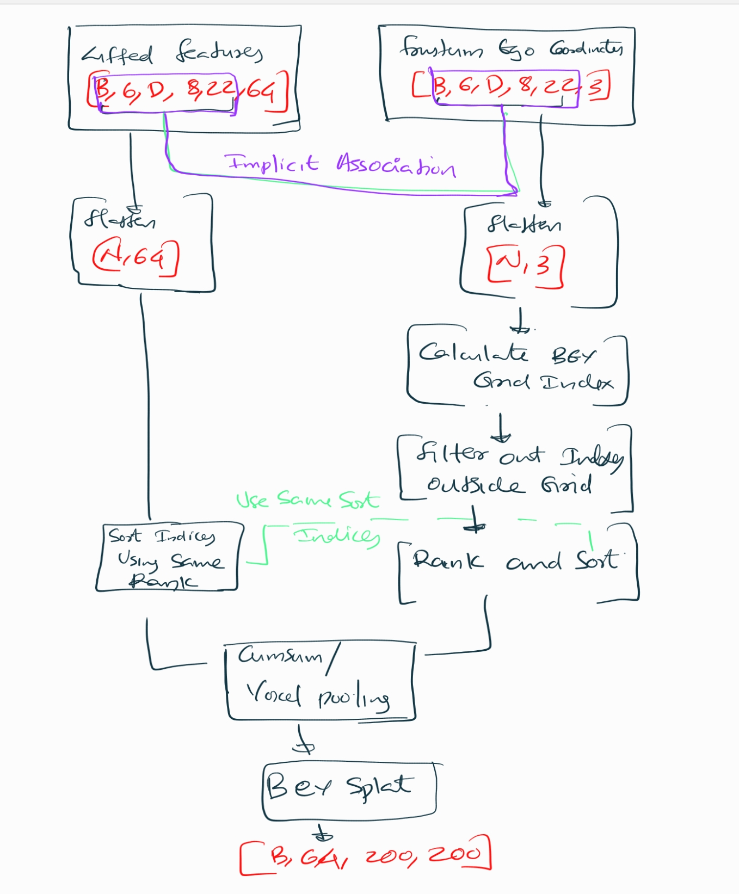

%matplotlib inline
import torch
import numpy as np
import matplotlib.pyplot as plt
import os
import torchvision.transforms as T
import torch.nn as nn, torch.nn.functional as F
import timm
from torch import nn
from PIL import Image
# NOTE: You can comment out the below if you dont have nuscenes data available locally and can directly load the preprocessed data later as i have cached it in this repo
import cv2
from pyquaternion import Quaternion
from nuscenes.nuscenes import NuScenes
from nuscenes.utils.data_classes import Box
from nuscenes.nuscenes import NuScenesLift-Splat-Shoot is one of the pioneering models that demonstrated how to effectively use multi-camera inputs—a common setup in autonomous vehicles (for example, the six-camera rig in the nuScenes dataset)—along with their corresponding intrinsic and extrinsic calibration parameters to build an end-to-end differentiable perception system. By carefully designing the architecture to preserve key geometric symmetries, the model enables direct learning from downstream planning feedback, allowing the perception module to improve in a data-driven manner.
Problem with simple approach
Suppose we were to use a simple approach of single image detector on each camera view and the convert those detections to ego frame using camera extrinsics/intrinsics
Image → Single-image detector → 2D detections → Transform to ego frame → OutputThe transformation to ego frame is post-processing, not part of the neural network. Therefore, the network does not know how its predictions will be fused across cameras and mostly the 2d detector involves some post processing steps that and putting it all together this approach is not end to end differentiable.
How Lift-Splat solves this
- Lift-Splat makes the entire process differentiable enabling end-to-end learning.
- It lifts image features into 3D frustums.
- Splats them into a bird’s-eye-view grid.
- Runs a BEV CNN for final predictions for say vehicle segmentation in BEV frame.
- This is called a forward projection method because you go from image → 3D → BEV by pushing features outward along rays. And this is geometry driven. (Ofcourse there is backward projection and forward-backward projection methods as well, which might be covered in another blog)
All of the steps will be explained in detail with the corresponding code below and the notebook is end to end executable.
mean = [0.485, 0.456, 0.406]
std = [0.229, 0.224, 0.225]
denormalize_img = T.Compose([
T.Normalize(
mean=[-m/s for m, s in zip(mean, std)],
std=[1/s for s in std],
),
T.Lambda(lambda x: x.clamp(0, 1)),
T.ToPILImage(),
])
normalize_img = T.Compose([
T.ToTensor(),
T.Normalize(mean=mean, std=std),
])
cams = ['CAM_FRONT_LEFT','CAM_FRONT', 'CAM_FRONT_RIGHT', 'CAM_BACK_LEFT', 'CAM_BACK', 'CAM_BACK_RIGHT']
# This is the image size the input CNN expects , so basically we will resize the images to this size
input_image_height = 128
input_image_width = 352
nx = np.array([200, 200,1]) # number of cells in x,y,z in the bev grid, note that z is 1 since we are doing a 2D bev
bx = np.array([-49.75, -49.75, 0.0]) # bottom right corner x,y,z of the bev grid
dx = np.array([0.5, 0.5, 20.0]) # x,y,z resolution of the bev gridCreating the Dataset
To create the dataset, I am using the nuScenes dataset. Each input sample consists of:
- 6 camera images
- Camera intrinsics and extrinsics matrices
- Augmentation transforms (This is not directly from the nuscenes dataset)
A crucial detail when applying augmentations such as resizing , cropping or rotation is that the camera intrinsics and extrinsics are defined for the original image dimensions. Therefore, any transformations applied to the images must be cached so that their inverse transforms can be used later during projection to the ego vehicle coordinate frame. This ensures that the image features are correctly aligned with the camera parameters (K, R, and T) and that the spatial consistency of the pipeline is preserved.
Code
# NOTE: If you dont have the nuscenes dataset, you can skip running this code block
# and load the preprocessed data saved as 'nuscenes_mini_sample_data_batch.pt' which is the repo and I load it in later code blocks
nusc = NuScenes(version='v1.0-mini', dataroot='/home/ap/dataset/nuscenes', verbose=True)
last_sample_token = '63c24b51feb94f14bec29022dae4975d'
second_last_sample_token = 'de9432d4fc7a4e5a985e2bc628eb614c'
last_sample = nusc.get('sample', last_sample_token)
second_last_sample = nusc.get('sample', second_last_sample_token)
samples = [second_last_sample, last_sample]
images_per_batch = []
rotations_per_batch = []
translations_per_batch = []
intrinsics_per_batch = []
resize_transforms_per_batch = []
crop_transforms_per_batch = []
gt_binary_images_per_batch = []
for my_sample in samples:
images = []
rotations = []
translations = []
intrinsics = []
resize_transforms = []
crop_transforms = []
for cam in cams:
cam_data = nusc.get('sample_data', my_sample['data'][cam])
image_name = os.path.join(nusc.dataroot, cam_data['filename'])
img = Image.open(image_name)
# print(f"Image from {cam}: size {img.size}")
calibrated_sensor_token = cam_data['calibrated_sensor_token']
calibrated_sensor = nusc.get('calibrated_sensor', calibrated_sensor_token)
rotation = torch.tensor(Quaternion(calibrated_sensor['rotation']).rotation_matrix)
translation = torch.tensor(calibrated_sensor['translation'])
camera_intrinsic = torch.tensor(calibrated_sensor['camera_intrinsic'])
H,W = img.size[1], img.size[0]
# print(f"Rotation:\n{rotation}\nTranslation:\n{translation}\nIntrinsics:\n{camera_intrinsic}\nImage Height: {H}, Width: {W}\n")
# print("=============================================================================================================================================")
resize = max(input_image_height / H, input_image_width / W) #this is to maintain aspect ratio
resize_dims = (int(W * resize), int(H * resize))
# print(f"Resize dimensions to fit feature map: {resize_dims}\n\n")
newW, newH = resize_dims
# cropping from the top since the top usually has more irrelevant info (sky)
# in the orginal implementation, cropping is done from bottom + top randomly with more weight on top
crop_h = newH - input_image_height
crop_w = newW - input_image_width
crop = (crop_w, crop_h, crop_w + input_image_width, crop_h + input_image_height)
# print(f"Crop box to get feature map size: {crop}\n")
img = img.resize(resize_dims).crop(crop)
#post homography transformations,
# we can consider resize and crop as two homography transformations and need to make matrices for them, because we want to undo later during projection because the intrinscs
# and extrinsics are for original image size and this needs to be taken care
# ideally these two should be two dimensional but now making it 3 work numerically well so
# for resize transform for z we multiply by 1, which is a no change and for crop_transform for z we subtract 0 which is also a no change.
resize_transform = torch.diag(torch.tensor([resize,resize, 1.0]))
crop_transform = -torch.tensor([[crop_w,crop_h,0.0]])
# print(f"Resize transform:\n{resize_transform}")
# print(f"Crop transform:\n{crop_transform}")
images.append(normalize_img(img))
rotations.append(rotation)
translations.append(translation)
intrinsics.append(camera_intrinsic)
resize_transforms.append(resize_transform)
crop_transforms.append(crop_transform)
images_per_batch.append(torch.stack(images))
rotations_per_batch.append(torch.stack(rotations))
translations_per_batch.append(torch.stack(translations))
intrinsics_per_batch.append(torch.stack(intrinsics))
resize_transforms_per_batch.append(torch.stack(resize_transforms))
crop_transforms_per_batch.append(torch.stack(crop_transforms))
sd_lidar = nusc.get('sample_data', my_sample['data']['LIDAR_TOP'])
# get ego pose to transform from global to ego vehicle frame
egopose = nusc.get('ego_pose', sd_lidar['ego_pose_token'])
trans = -np.array(egopose['translation'])
rot = Quaternion(egopose['rotation']).inverse
target_binary_image = np.zeros((nx[0], nx[1]))
for tok in my_sample['anns']:
inst = nusc.get('sample_annotation', tok)
# add category for lyft
if not inst['category_name'].split('.')[0] == 'vehicle':
continue
box = Box(inst['translation'], inst['size'], Quaternion(inst['rotation']))
# bring box to ego frame
box.translate(trans)
box.rotate(rot)
pts = box.bottom_corners()[:2].T
# bring points to grid coords
pts = np.round(
(pts - bx[:2] + dx[:2]/2.) / dx[:2]
).astype(np.int32)
pts[:, [1, 0]] = pts[:, [0, 1]]
cv2.fillPoly(target_binary_image, [pts], 1.0)
gt_binary_images_per_batch.append(torch.tensor(target_binary_image))
#Saving the data for the data for tutorial usage
data = {"images":torch.stack(images_per_batch), # (B, num_cams, 3, H, W)
"rotations":torch.stack(rotations_per_batch), # (B, num_cams, 3, 3)
"translations":torch.stack(translations_per_batch), # (B, num_cams, 3)
"intrinsics":torch.stack(intrinsics_per_batch), # (B, num_cams, 3, 3),
"resize_transforms":torch.stack(resize_transforms_per_batch), # (B, num_cams, 3, 3)
"crop_transforms":torch.stack(crop_transforms_per_batch), # (B, num_cams, 1, 3)
"gt_binary_images":torch.stack(gt_binary_images_per_batch) # (B, H, W)
}
#torch.save(data,"nuscenes_mini_sample_data_batch.pt")======
Loading NuScenes tables for version v1.0-mini...
23 category,
8 attribute,
4 visibility,
911 instance,
12 sensor,
120 calibrated_sensor,
31206 ego_pose,
8 log,
10 scene,
404 sample,
31206 sample_data,
18538 sample_annotation,
4 map,
Done loading in 0.330 seconds.
======
Reverse indexing ...
Done reverse indexing in 0.1 seconds.
======
# NOTE If you dont have nuscenes dataset, you can directly load the preprocessed data saved as 'nuscenes_mini_sample_data_batch.pt' which is in the repo
data = torch.load("nuscenes_mini_sample_data_batch.pt")
images, rotations, translations, intrinsics, resize_transforms, crop_transforms, target_binary_image = (
data['images'],
data['rotations'],
data['translations'],
data['intrinsics'],
data['resize_transforms'],
data['crop_transforms'],
data['gt_binary_images']
)Code
def plot_all_cams(images_batch, cams):
imgs = images_batch
n = len(cams)
rows, cols = 2, 3
plt.figure(figsize=(16, 9))
for i in range(n):
plt.subplot(rows, cols, i + 1)
img = denormalize_img(imgs[i])
plt.imshow(img)
plt.title(cams[i], fontsize=10)
plt.axis('off')
plt.suptitle('All camera images resized and cropped', fontsize=14)
plt.tight_layout()
plt.show()
idx = 0
plot_all_cams(images[1], cams)
def plot_bev(target_binary_image, nx, bx, dx):
bev = target_binary_image.detach().cpu().numpy() if torch.is_tensor(target_binary_image) else target_binary_image
bev = bev.T
x_min, y_min = bx[0], bx[1]
x_max = x_min + nx[0] * dx[0]
y_max = y_min + nx[1] * dx[1]
plt.figure(figsize=(7, 7))
plt.imshow(bev, cmap='gray', origin='lower', extent=[x_min, x_max, y_min, y_max], interpolation='nearest')
plt.xlabel('X (m) — forward')
plt.ylabel('Y (m) — left')
plt.title('BEV target ')
plt.grid(color='w', alpha=0.1, linestyle=':')
plt.colorbar(label='occupancy')
# Ego at (0,0)
plt.scatter([0], [0], c='red', s=30, label='Ego')
plt.legend()
plt.show()
plot_bev(target_binary_image[0],nx,bx,dx)


Lifting image coordinates with depth
Lifting refers to the process of converting 2D image cordinates into 3D space by associating each pixel (or feature map location) with a set of depth hypotheses. This is a pure geometric step.
- Each pixel (or feature map cell) has coordinates ((u, v)) in image space.
- Since we don’t know the true depth (d) of each pixel, we hypothesize multiple depths:
- For each ((u, v)), we create a set of 3D points ((u, v, d)) for different values of (d).
This gives us a 3D volume of 3D points extending from the camera into the scene.
The grid should be alinged with feature map
The feature map from the backbone (EfficientNet used below) has a lower resolution than the input image (here stride=16). So instead of lifting every pixel in the original image, we lift each cell in the feature map, which corresponds to a patch in the original image.
- For example, if the input image is (128 x 352), and the stride is 16, the feature map is (8 x 22).
- For each of these 8×22 positions, we hypothesize (D) depth values, and network will predict say 64 channel features
- So grid cell cordinates should be divided such that they have the similar shape as feature map, for example here the lifted grid has shape ((D, H, W,3)) = ((41, 8, 22,3)) and the lifted feature map will have shape (41,8,22,64)
- Each feature map cell has its corresponding 3D grid points
This alignment is crucial because:
- You want to associate the feature vector at each ((h, w)) with the corresponding 3D points along the ray.
- Later, when we splat these 3D points into the BEV grid, we use the depth distribution (learned by the network) to weigh how much each depth contributes to the final BEV cell.
stride = 16
# feature map size after feature extraction from the input image
feature_map_height = input_image_height//stride
feature_map_width = input_image_width//stride #feature map size, (8, 22)
depth_bin = [4.0,45.0,1.0] # start,stop,step
ds = torch.arange(*depth_bin,dtype=torch.float).view(-1,1,1).expand(-1,feature_map_height,feature_map_width)
D,_,_ = ds.shape
xs = torch.linspace(0, input_image_width - 1, feature_map_width, dtype=torch.float).view(1, 1, feature_map_width).expand(D, feature_map_height, feature_map_width)
ys = torch.linspace(0, input_image_height - 1, feature_map_height, dtype=torch.float).view(1, feature_map_height, 1).expand(D, feature_map_height, feature_map_width)
lifted_image_coordinates = torch.stack((xs,ys,ds),-1)
print(f"Lifted coordinates shape is {lifted_image_coordinates.shape}")Lifted coordinates shape is torch.Size([41, 8, 22, 3])Frustum Creation

Now we have to project the lifted image points into the ego frame which forms a frustum . Initially, the lifted image coordinates are in post-augmentation space (after resize and crop), but the camera intrinsics are defined in the original image space. To ensure geometric consistency, we first undo the augmentations by applying the inverse of the crop translation and resize transform. This maps the points back to the original image dimensions.
Next, we compute unnormalized pixel coordinates scaled by depth ((u , v , Z)), which is necessary for converting 2D image points into 3D camera-frame coordinates using the pinhole camera model. We then multiply these coordinates by the inverse of the camera intrinsics to obtain 3D points in the camera frame.
Finally, we transform these camera-frame points into the ego frame using the camera-to-ego rotation and translation matrices.
1. Augmentation Inverse Mapping
\[ X = R^{-1} (X' - T) \]
2. Unnormalize Pixel Coordinates
Given normalized pixel coordinates \((u, v)\) and depth \(Z_c\) from pinhole camera principle
\[ \begin{bmatrix} u' \\\\ v' \end{bmatrix} = \begin{bmatrix} u \cdot Z_c \\\\ v \cdot Z_c \end{bmatrix} \]
3. Camera Intrinsics Inverse
To get 3D camera coordinates from image coordinates and depth:
\[ \begin{bmatrix} X_c \\\\ Y_c \\\\ Z_c \end{bmatrix} = K^{-1} \begin{bmatrix} u' \\\\ v' \\\\ Z_c \end{bmatrix} \]
Where \(K\) is the camera intrinsics matrix.
4. Camera-to-Ego Transformation
To transform from camera frame to ego (vehicle) frame:
\[ \begin{bmatrix} X_{ego} \\\\ Y_{ego} \\\\ Z_{ego} \end{bmatrix} = R_{c2e} \begin{bmatrix} X_c \\\\ Y_c \\\\ Z_c \end{bmatrix} + T_{c2e} \]
5. Combined Transformation
\[ \text{Combined} = R_{c2e} \cdot K^{-1} \]
So the full transformation is:
\[ \begin{bmatrix} X_{ego} \\\\ Y_{ego} \\\\ Z_{ego} \end{bmatrix} = \text{Combined} \begin{bmatrix} u' \\\\ v' \\\\ Z_c \end{bmatrix} + T_{c2e} \]
# so the lifted image coordinates are in post augmented space, but the intrinsics are pre-augmented
# so we should map the points back, in the example i used resize and crop, so we should apply inverse transforms here
# before converting them to 3D points in ego frame
# so you can think of the transformation as
# X_cropped_and_resized = Resize_transform*X + T # where R is the resize scale matrix and T is the crop translation
# X = Resize_transform @ (X_cropped_and_resized - T)
batch_size,num_cameras_per_batch, _,_ = crop_transforms.shape
# the last dimension is for x,y,depth and first two are batch and camera index and the D,H,W need to be broadcasted
lifted_image_coordinates_in_orginal_image_dimension = lifted_image_coordinates - crop_transforms.view(batch_size,num_cameras_per_batch,1,1,1,3)
lifted_image_coordinates_in_orginal_image_dimension =torch.inverse(resize_transforms).view(batch_size,num_cameras_per_batch,1,1,1,3,3).matmul(lifted_image_coordinates_in_orginal_image_dimension.unsqueeze(-1))
lifted_image_coordinates_in_orginal_image_dimension = lifted_image_coordinates_in_orginal_image_dimension.squeeze(-1)
lifted_image_coordinates_in_orginal_image_dimension_with_unnormalized_xy = lifted_image_coordinates_in_orginal_image_dimension[...,:2]*lifted_image_coordinates_in_orginal_image_dimension[...,2:3]
lifted_image_coordinates_in_orginal_image_dimension_with_unnormalized_x_y_z = torch.cat((lifted_image_coordinates_in_orginal_image_dimension_with_unnormalized_xy, lifted_image_coordinates_in_orginal_image_dimension[...,2:3]),-1).unsqueeze(-1)
# first we have to multiply with inverse intrinsics to get the 3D points in camera frame
# [X_c, Y_c, Z_c] = inv(K) * [u*Z_c, v*Z_c, Z_c]
# Then we can transform to ego frame using rotation and translation
# [X_ego, Y_ego, Z_ego] = R_c2e * [X_c, Y_c, Z_c] + T_c2e
# we can combine these two steps into one matrix multiplication and one addition
combined_k_inverse_and_rotation = rotations.to(dtype=intrinsics.dtype).matmul(torch.inverse(intrinsics))
frustum_3d_points_in_ego_frame = combined_k_inverse_and_rotation.view(batch_size,num_cameras_per_batch,1,1,1,3,3).matmul(lifted_image_coordinates_in_orginal_image_dimension_with_unnormalized_x_y_z).squeeze(-1) + translations.view(batch_size,num_cameras_per_batch,1,1,1,3)
print(f"Frustum 3D points in ego frame shape: {frustum_3d_points_in_ego_frame.shape}")
Frustum 3D points in ego frame shape: torch.Size([2, 6, 41, 8, 22, 3])Camera Encode

Till now what was done was purely geometric , now we have to process the image and in the paper they use EfficientNet-B0 as the backbone. The last two feature maps are extracted: - x16 (stride /16, mid-level features) - x32 (stride /32, deep semantic features)
The deeper /32 map is upsampled to match /16 resolution, then both are concatenated along channels.
Finally, a fusion block (two 3×3 conv layers with BatchNorm + ReLU) refines the combined features into a unified representation [B, 512, H/16, W/16] for the Lift step.
# NOTE: The architecture here is directly from the implemenation of LIFT,
# I just used timm for simplicity and added some comments.
# ------------------------------------------------------------
# 1) Build a feature-extractor backbone
# out_indices=(3,4) for EfficientNet-B0 correspond to:
# - idx 3: stride ~ /16, channels = 112
# - idx 4: stride ~ /32, channels = 320
# ------------------------------------------------------------
batch,num_cameras,channel,h,w = images.shape
x = images.view(batch*num_cameras,channel,h,w)
backbone = timm.create_model(
'efficientnet_b0',
pretrained=False,
features_only=True,
out_indices=(3, 4)
)
# ------------------------------------------------------------
# 2) Forward through the backbone to get two scales:
# x16: [B, 112, H/16, W/16]
# x32: [B, 320, H/32, W/32]
# ------------------------------------------------------------
feats = backbone(x)
x16, x32 = feats[0], feats[1]
print(f"x16 (idx=3) shape: {x16.shape}")
print(f"x32 (idx=4) shape: {x32.shape}")
# ------------------------------------------------------------
# 3) Upsample the deeper /32 map to match /16 spatial size.
# ------------------------------------------------------------
upsample_to_x16 = nn.Upsample(size=x16.shape[-2:], mode='bilinear', align_corners=True)
x32_up = upsample_to_x16(x32)
print(f"x32 upsampled to x16 size: {x32_up.shape}") # [B, 320, H/16, W/16]
# ------------------------------------------------------------
# 4) Concatenate along channels (skip fusion like U-Net).
# in_channels = 112 + 320 = 432 for EfficientNet-B0
# ------------------------------------------------------------
x_cat = torch.cat([x16, x32_up], dim=1)
print(f"concatenated shape: {x_cat.shape}") # ~ [B, 432, H/16, W/16]
in_channels = x_cat.shape[1]
out_channels = 512
# ------------------------------------------------------------
# 5) Fuse + refine: two 3x3 convs with BN + ReLU.
# - First 3x3 mixes skip & deep features and compresses to out_channels
# - Second 3x3 refines after nonlinearity (effective RF ~5x5 total)
# - bias=False because BatchNorm has its own affine params
# ------------------------------------------------------------
fuse_and_refine = nn.Sequential(
nn.Conv2d(in_channels, out_channels, kernel_size=3, padding=1, bias=False),
nn.BatchNorm2d(out_channels),
nn.ReLU(inplace=True),
nn.Conv2d(out_channels, out_channels, kernel_size=3, padding=1, bias=False),
nn.BatchNorm2d(out_channels),
nn.ReLU(inplace=True),
)
x_feat = fuse_and_refine(x_cat)
print(f"fused features shape: {x_feat.shape}") # ~ [B, 512, H/16, W/16]x16 (idx=3) shape: torch.Size([12, 112, 8, 22])
x32 (idx=4) shape: torch.Size([12, 320, 4, 11])
x32 upsampled to x16 size: torch.Size([12, 320, 8, 22])
concatenated shape: torch.Size([12, 432, 8, 22])
fused features shape: torch.Size([12, 512, 8, 22])Lifting image features to grid
Now we have extracted the feature from the effiecient backbone , now we have a depth head and context feature head , the idea is to have a softattention over depth and distribute image feature across multiple depth hypotheses and then the network learn how much weight to assign to each depth bin per feature from the loss. * For each pixel, the network predicts a categorical distribution over depth bins (via softmax). * Instead of choosing a single depth (hard assignment), the pixel’s feature vector is weighted by these probabilities and spread across all depth bins. * This means the network attends to multiple possible depths proportionally to their predicted likelihood. * Thus a volume of C*D , will be created for each feature
Benefits
- Depth from a single image is ambiguous. Hard assignment (one depth per pixel) would propagate errors.
- Soft attention allows the network to set plausible depths, letting downstream BEV fusion resolve ambiguity using multi-camera context or final target loss.
- It’s differentiable, so the entire pipeline can learn end-to-end.
number_of_depth_bins = D
number_of_conv_features = 64
# Two independent heads (1x1) for depth and feature prediction from the fused features
depth_head = nn.Conv2d(out_channels, number_of_depth_bins, kernel_size=1)
feature_head = nn.Conv2d(out_channels, number_of_conv_features, kernel_size=1)
depth_logits = depth_head(x_feat)
print(f"depth logits shape: {depth_logits.shape}") # ~ [B, D, H/16, W/16]
feature_maps = feature_head(x_feat)
print(f"feature maps shape: {feature_maps.shape}") # ~ [B, 64, H/16, W/16]
depth_prob = nn.functional.softmax(depth_logits, dim=1)
lifted = torch.einsum('bdhw,bchw->bcdhw', depth_prob, feature_maps)
print(f"lifted features shape: {lifted.shape}") # ~ [B, 64, D, H/16, W/16]depth logits shape: torch.Size([12, 41, 8, 22])
feature maps shape: torch.Size([12, 64, 8, 22])
lifted features shape: torch.Size([12, 64, 41, 8, 22])# Produce per-pixel depth distribution and context features,
# then "lift" them into a per-depth frustum feature volume (C × D × H × W),
# as in Lift-Splat-Shoot’s lift step.
# - number_of_depth_bins (D): # of discrete depth planes along each pixel ray
# - number_of_conv_features (C): channel size of the per-pixel context vector
number_of_depth_bins = D
number_of_conv_features = 64
# 1×1 heads:
# - depth_head: per-pixel logits over D depth bins
# - feature_head: per-pixel context embedding (C channels) that will be later
# broadcast across depth via an outer product with depth probs
depth_head = nn.Conv2d(out_channels, number_of_depth_bins, kernel_size=1)
feature_head = nn.Conv2d(out_channels, number_of_conv_features, kernel_size=1)
# Predict raw depth logits and per-pixel context features
depth_logits = depth_head(x_feat) # [B, D, H/16, W/16]
print(f"depth logits shape: {depth_logits.shape}")
feature_maps = feature_head(x_feat) # [B, C, H/16, W/16]
print(f"feature maps shape: {feature_maps.shape}")
# Softmax over the depth-channel dimension to get a categorical distribution
# per pixel. This yields p(d | pixel) that sums to 1 across D for each (h,w).
depth_prob = torch.softmax(depth_logits, dim=1) # [B, D, H/16, W/16]
# "Lift" operation (outer product across depth and context):
# For each pixel, expand:
# - depth_prob: [B, D, H, W] -> [B, 1, D, H, W]
# - feature_maps: [B, C, H, W] -> [B, C, 1, H, W]
# and multiply to obtain per-depth features: [B, C, D, H, W].
lifted_features = torch.einsum('bdhw,bchw->bcdhw', depth_prob, feature_maps)
print(f"lifted features shape: {lifted_features.shape}") # [B, C, D, H/16, W/16]
lifted_features = lifted_features.view(batch_size, num_cameras_per_batch, number_of_conv_features, number_of_depth_bins, feature_map_height, feature_map_width)
print(f"lifted features reshaped to per-camera: {lifted_features.shape}") # [B, num_cams, C, D, H/16, W/16]
# This permute is needed because the frustum is already is shaper as [B, num_cams, C, D, H, W] and we need to asscociated these two in splat step
lifted_features = lifted_features.permute(0,1,3,4,5,2)
print(f"lifted features permuted to per-camera: {lifted_features.shape}") # [B, num_cams, D, H/16, W/16, C]depth logits shape: torch.Size([12, 41, 8, 22])
feature maps shape: torch.Size([12, 64, 8, 22])
lifted features shape: torch.Size([12, 64, 41, 8, 22])
lifted features reshaped to per-camera: torch.Size([2, 6, 64, 41, 8, 22])
lifted features permuted to per-camera: torch.Size([2, 6, 41, 8, 22, 64])Splat

Imagine you have a cloud of 3D points (Which is the frustum with ego coordinates which we made earlier) where each point carries a feature vector (Which is the one we created using the efficientnet backbone). These points are scattered in space, but out goal is to organize them into a structured grid so you can run a convolutional network on it (because CNNs need regular grids, not random points). This is exactly what the the splat is doing
Now We have (per batch): - x: shape (B, N, D, H, W, C) - Each element x[b, n, d, h, w] is a learned feature vector representing “what would be at depth bin d along pixel (h,w) of camera n”. - It already encodes both appearance (from EfficientNet) and soft depth focus (via multiplying by depth probabilities; high prob depth bins dominate).
- frustum_3d_points_in_ego_frame: shape (B, N, D, H, W, 3)
- Pure geometry: the ego-frame 3D coordinates (X,Y,Z) that correspond to that pixel-depth hypothesis.
- No learning happens here; it’s deterministic from intrinsics/extrinsics + augmentation undo + chosen depth bin centers.
Think of frustum_3d_points_in_ego_frame as a mapping function f: (n, d, h, w) → voxel index (ix, iy, iz) via discretization. x supplies the content to deposit there.
3D frustum coordinate to voxel index conversion \[ \text{idx}_i = \frac{\text{coord}_i - (b_i - d_i / 2)}{d_i} \]
The splat step follows this sequence:
Flatten → Voxelize → Mask → Sort → Cumsum → BEV Grid
Flatten: reshape tensors to
(B*N*D*H*W, C)and(B*N*D*H*W, 3)Voxelize: map each 3D point to a voxel index
Mask: remove out-of-bounds points
Sort & Cumsum: group features by voxel index and sum them
BEV Grid: place summed features into a structured grid
This pooling is parameter-free, but its structure determines how gradients flow back to image features and depth probabilities.
lifted_features_flattened = lifted_features.reshape(-1, number_of_conv_features) # [(B * num_cams * D * H/16 * W/16), C]
voxel_indices = (frustum_3d_points_in_ego_frame - (bx - dx/2.0))/dx
voxel_indices = voxel_indices.long().view(-1,3) # [(B * num_cams * D * H/16 * W/16), 3]
# batch_ix: with rows like [0,0,...,0, 1,1,...,1, ..., B-1,...,B-1]
q = voxel_indices.shape[0] // batch_size
batch_ix = torch.arange(batch_size).repeat_interleave(q).unsqueeze(1)
voxel_indices = torch.cat((voxel_indices,batch_ix), dim=1) # [(B * num_cams * D * H/16 * W/16), 4]
valid_indices_mask_within_grid_bounds = (voxel_indices[:,0] >=0) & (voxel_indices[:, 0] < nx[0]) \
& (voxel_indices[:, 1] >= 0) & (voxel_indices[:, 1] < nx[1]) \
& (voxel_indices[:, 2] >= 0) & (voxel_indices[:, 2] < nx[2])
valid_lifted_features = lifted_features_flattened[valid_indices_mask_within_grid_bounds]
valid_voxel_indices = voxel_indices[valid_indices_mask_within_grid_bounds]
# This creates a unique linear ordering key so that All points for the same (ix, iy, iz, b) voxel end up contiguous and will have the same value, we have batch_size included to make sure points from different batches go to different voxels
# Grouping identical voxel indices allows fast segment reduction using a single pass cumulative sum instead of hash maps or scatter with atomic ops which is needed for the cumsum trick below
ranks = valid_voxel_indices[:,0]*(nx[1]*nx[2]*batch_size) + valid_voxel_indices[:,1]*(nx[2]*batch_size) + valid_voxel_indices[:,2]*batch_size + valid_voxel_indices[:,3]
sorts = ranks.argsort()
valid_lifted_features_sorted = valid_lifted_features[sorts]
valid_voxel_indices_sorted = valid_voxel_indices[sorts]
ranks = ranks[sorts]
# NOTE: Cumsum trick, which is something this paper introduced.
# Below is an example to illustrate the cumsum trick for segment summing
# rank = [a,a,a,b,c,c]
# features = [2,3,5,7,11,13]
# indices = [0,1,2,3,4,5]
# cumsum(features) = [2,5,10,17,28,41]
# kept =[False, False, True, True, False, True]
# cumsum(features)[kept] = [10,17,41]
# summed_features = [10, 17-10, 41-17] = [10,7,24]
valid_lifted_features_cumsum = torch.cumsum(valid_lifted_features_sorted, dim=0)
kept = torch.ones_like(ranks, dtype=torch.bool)
kept[:-1] = (ranks[1:] != ranks[:-1])
valid_lifted_features_aggregated = valid_lifted_features_cumsum[kept]
valid_voxel_indices_sorted = valid_voxel_indices_sorted[kept]
valid_summed_features = torch.cat((valid_lifted_features_aggregated[0:1], valid_lifted_features_aggregated[1:] - valid_lifted_features_aggregated[:-1]), dim=0)
# griddify (B x C x Z x X x Y)
voxel_grid_pooled_features = torch.zeros((batch_size, number_of_conv_features, nx[2], nx[0], nx[1]), device=valid_summed_features.device)
voxel_grid_pooled_features[valid_voxel_indices_sorted[:,3], :, valid_voxel_indices_sorted[:,2], valid_voxel_indices_sorted[:,0], valid_voxel_indices_sorted[:,1]] = valid_summed_features
# collapse Z
voxel_grid_pooled_features = torch.cat(voxel_grid_pooled_features.unbind(dim=2), 1)
print(f"voxel grid pooled features shape after collapsing Z: {voxel_grid_pooled_features.shape}") # [B, C*Z, X, Y]voxel grid pooled features shape after collapsing Z: torch.Size([2, 64, 200, 200])The splat step is the bridge between unstructured 3D projections and structured BEV processing. It’s where geometry meets learning and it sets the stage for the BEV encoder to make sense of the scene.
BevEncode/shoot
- The BevEncode module acts as a 2D convolutional encoder that processes the bird’s-eye view (BEV) feature map.
- Intuitively, it’s like a mini neural network that learns to interpret the spatial layout of the scene from above
- The final output is a map of logits indicating things like occupancy or drivable area, helping the model make predictions about the scene layout from the aggregated voxel features. (In the opensourced paper code its occupancy)
- This step is not exactly the shoot they discuss in the paper, but i think it can be considered like shoot as well.
class BevEncode(nn.Module):
def __init__(self, inC, outC, backbone='resnet18', pretrained=False):
super().__init__()
self.bk = timm.create_model(backbone, in_chans=inC, features_only=True, pretrained=pretrained)
c1, c3 = self.bk.feature_info.channels()[1], self.bk.feature_info.channels()[3] # layer1 (/4), layer3 (/16)
self.lat3 = nn.Conv2d(c3, 256, 1)
self.lat1 = nn.Conv2d(c1, 64, 1)
self.fuse = nn.Sequential(
nn.Conv2d(256+64, 256, 3, 1, 1, bias=False),
nn.BatchNorm2d(256),
nn.ReLU(inplace=True)
)
self.head = nn.Sequential(
nn.Upsample(size=(200, 200), mode='bilinear', align_corners=False),
nn.Conv2d(256, 128, 3, 1, 1, bias=False), nn.BatchNorm2d(128), nn.ReLU(inplace=True),
nn.Conv2d(128, outC, 1)
)
def forward(self, x):
feats = self.bk(x)
x1, x3 = feats[1], feats[3]
x1_lat = self.lat1(x1)
x3_up = F.interpolate(self.lat3(x3), size=x1_lat.shape[-2:], mode='bilinear', align_corners=False)
y = self.fuse(torch.cat([x3_up, x1_lat], 1))
return self.head(y)
bev_encoder = BevEncode(inC=number_of_conv_features, outC=1, backbone='resnet18', pretrained=False)
preds = bev_encoder(voxel_grid_pooled_features)
print(f"BEV encoder output shape: {preds.shape}") # [B, 1, ny, nx]
##BEV encoder output shape: torch.Size([2, 1, 200, 200])Loss
- The loss compares BEV logits to a binary BEV occupancy target via BCEWithLogitsLoss.
- The key gradient at each cell flows back through the BEV head and backbone, into the summed voxel features, and further into depth probabilities and camera features.
- This creates a powerful loop: BEV supervision teaches both which depths to trust and what image features to extract so that lifted features land in the right voxels and classify correctly.
loss_fn = nn.BCEWithLogitsLoss()
loss = loss_fn(preds.squeeze(1), target_binary_image)Gradient Flow Insight through voxel pooling
How Gradients Flow Through Voxel Pooling
In Lift-Splat-Shoot, voxel pooling is a sum operation over features projected into a voxel from different camera rays.
Forward Pass
Each voxel \(v\) gets a feature vector:
\[ V_v = \sum_i x_i \]
where each \(x_i\) is a feature from a frustum point (a pixel-depth pair) that projects into voxel \(v\).
Then, the BEV encoder processes \(V_v\) to produce logits \(\rightarrow\) loss \(L\).
Backward Pass
During backpropagation:
\[ \frac{\partial L}{\partial x_i} = \frac{\partial L}{\partial V_v} \cdot \frac{\partial V_v}{\partial x_i} = \frac{\partial L}{\partial V_v} \]
Because \(V_v\) is just a sum, the gradient with respect to each contributing \(x_i\) is identical.
Intuition
- Every frustum sample that lands in voxel \(v\) gets the same gradient.
- If voxel \(v\) is labeled as occupied (foreground), and the model predicts low logit, the gradient will push all contributing \(x_i\) to look more like “foreground”.
- If voxel \(v\) is background, the gradient pushes all \(x_i\) to look more like “background”.
This creates coherent learning: all rays that vote for a voxel are nudged in the same direction, reinforcing consistent feature learning.
Further Gradient Flow
These gradients then flow into:
- Depth softmax weights: Encouraging the model to assign higher probability to the correct depth bin.
- Camera feature extractor: Learning better per-pixel features that are discriminative for occupancy.
How Depth Probabilities Interact
Before pooling, each pixel’s feature is modulated by depth probability:
\[ \text{new\_x}[n, d, h, w, :] = \text{depth\_prob}[n, d, h, w] \cdot \text{feat}[n, h, w, :] \]
What Happens If Depth Is Uncertain?
- Depth probability is spread across bins \(\rightarrow\) feature energy is dispersed across multiple voxels.
- This leads to diluted evidence in BEV \(\rightarrow\) weaker activations \(\rightarrow\) higher loss.
- Gradients push depth logits to sharpen around the correct depth.
What Happens If Depth Is Accurate?
- Most feature mass lands in the correct voxel \(\rightarrow\) strong activation \(\rightarrow\) easier classification.
- Training encourages depth certainty that aligns with occupancy labels and is consistent across views.
Multi-Camera Fusion Effect
Multiple cameras may project rays into the same voxel from different angles.
Summation Across Cameras
- True positives: Multiple views reinforce the voxel’s activation \(\rightarrow\) stronger signal.
- False positives: Noise from one camera is unlikely to be corroborated \(\rightarrow\) low magnitude \(\rightarrow\) treated as background.
Intuition
This acts like a consensus mechanism:
- Voxels with consistent multi-view support are boosted.
- Voxels with isolated, weak support are suppressed.
- Also note that mutliple coordinates from a single image can land in the same BEV grid as well.
Summary
Lift-Splat-Shoot’s voxel pooling and depth-weighted projection create a differentiable pipeline where:
- Gradients flow coherently to all contributing frustum points.
- Depth estimation is refined via supervision from occupancy labels.
- Multi-camera fusion enhances robustness and reduces noise.
Credits
The paper is extremely well written and the code is opensourced , so all thanks to the authors Jonah Philion and Sanja Fidler